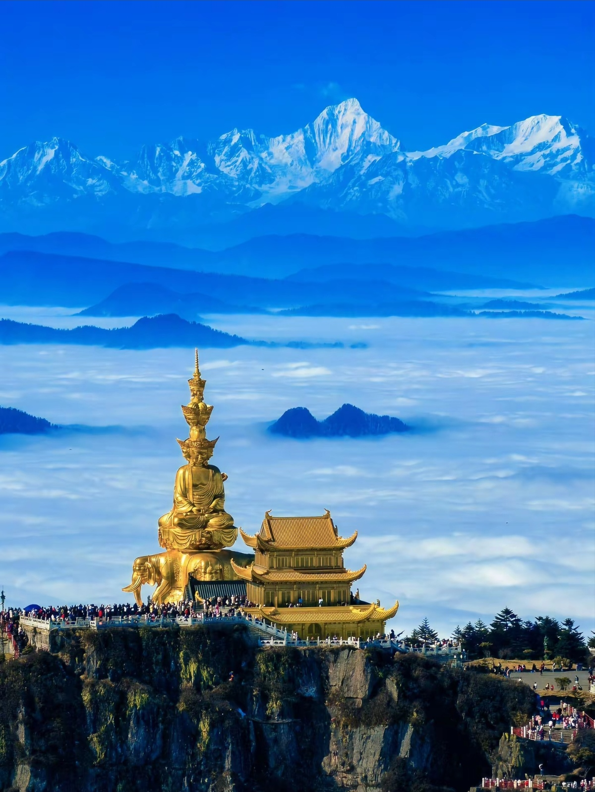
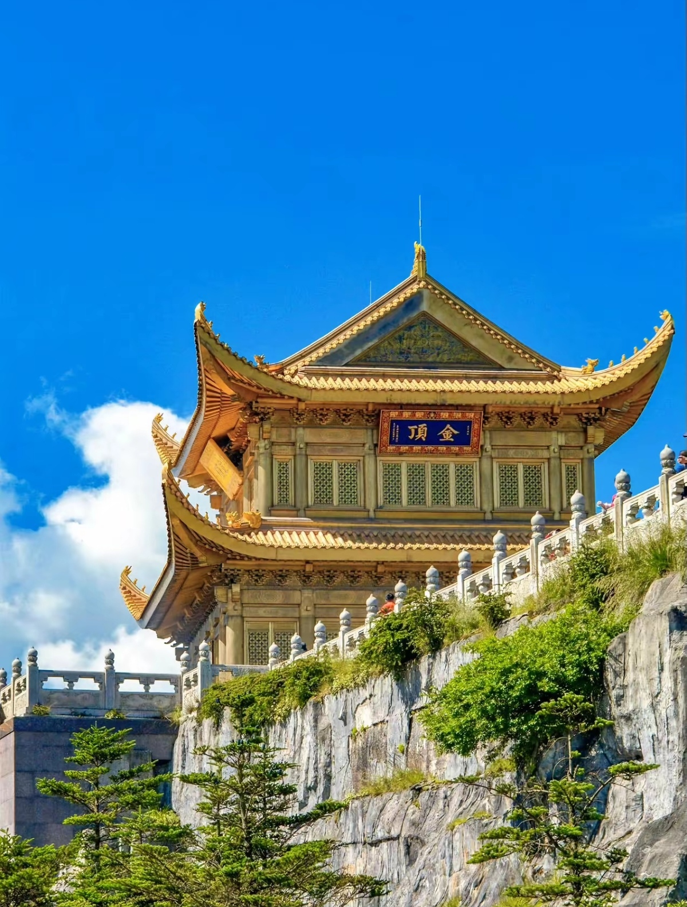
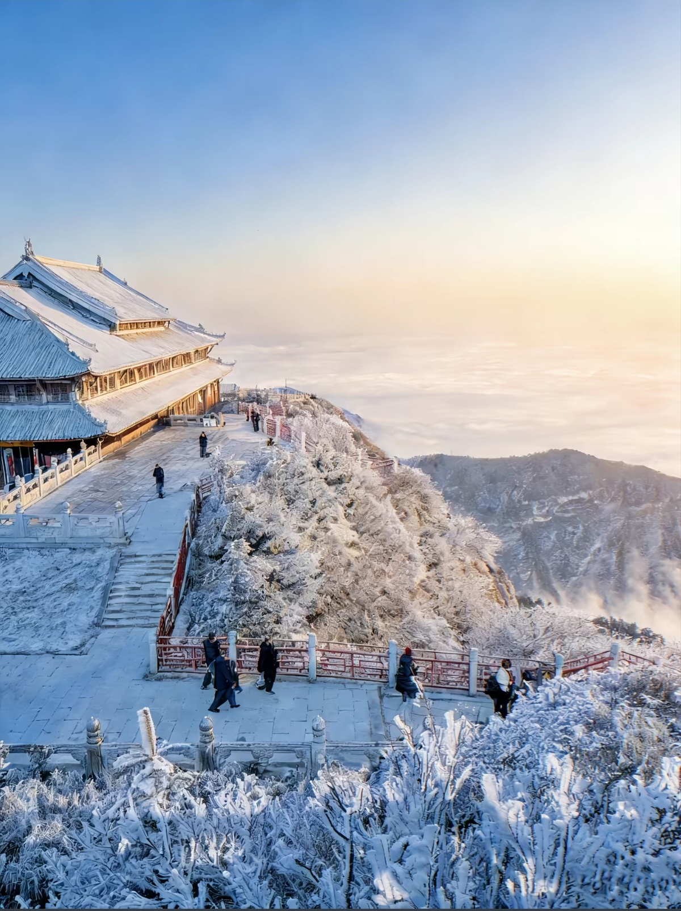
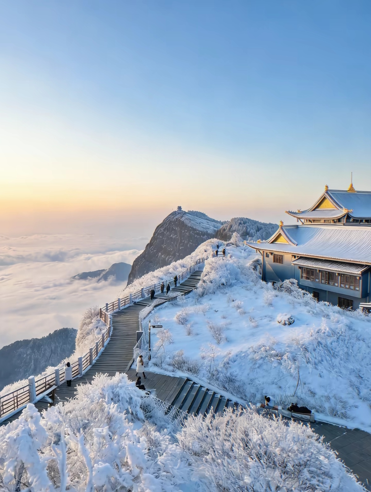
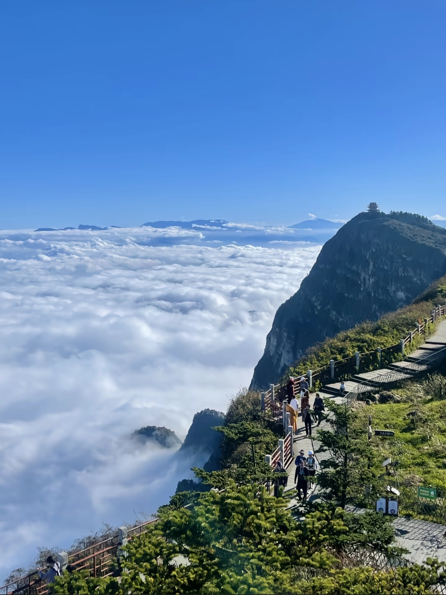
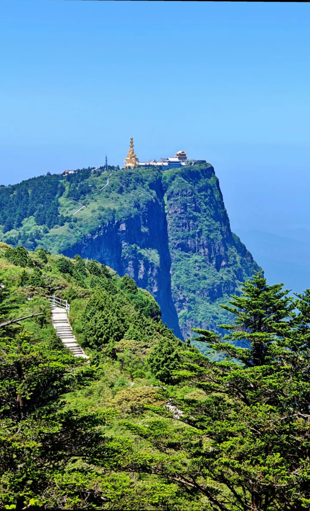

Mount Emei is one of China's four sacred Buddhist mountains and a UNESCO World Heritage Site. Located in Sichuan Province, it rises to 3,099 meters at its peak (Golden Summit). The mountain is famous for its stunning sunrise above the clouds, ancient temples, diverse wildlife (especially Tibetan macaques), and rich Buddhist culture. With over 100 temples and monasteries dating back 2,000 years, Emei is a living center of Chinese Buddhism. The hike through lush forests, misty peaks, and stone steps is both physically challenging and spiritually rewarding.






From Chengdu: High-speed train (1.5h, ¥65). Frequent departures. Emei Station is 30 min from mountain entrance by taxi (¥30-40).
From Chengdu: Bus from Xinnanmen Bus Station (3-4h, ¥80-100). Arrives at Emei Bus Station, then taxi or local bus to mountain.
From Emei City: Taxi to Baoguo Temple area (main entrance, 30 min, ¥30-40). Or bus #5 from city center (¥2).
Cable Cars: Two cable cars: Wannian (¥65 up) and Golden Summit (¥55 up). Or hike 2-3 days via ancient trails.
Route: Baoguo Temple → Bus to Leidongping → Cable car to Golden Summit → Return same way
Duration: 8-10 hours
Best for: Short on time, want to see summit
Day 1: Baoguo → Qingyin Pavilion → Wannian Temple → Stay at Hongchunping
Day 2: Hongchunping → Leidongping → Golden Summit (sunrise) → Cable car down
Day 1: Baoguo → Fuhu Temple → Qingyin Pavilion → Hongchunping
Day 2: Hongchunping → Xixian Pool → Leidongping → Jieyin Hall
Day 3: Leidongping → Golden Summit (sunrise) → descent
Focus: Baoguo Temple, Fuhu Temple, Wannian Temple, Golden Summit Temple
Activities: Buddhist ceremonies, Meditation sessions, Monk conversations
Duration: 2-3 days
Location: Mountain entrance area
Specialty: Local dishes, Noodles, Vegetarian options
Hours: 7:00 AM - 9:00 PM
Location: Near Golden Summit and temples
Specialty: Hot meals, Noodles, Rice dishes
Hours: 6:30 AM - 8:00 PM
Location: Mid-mountain
Specialty: Buddhist vegetarian cuisine, Local vegetables
Hours: 10:00 AM - 8:00 PM
Location: Emei city (mountain base)
Specialty: Local Sichuan dishes, Hot pot, Street food
Hours: 11:00 AM - 10:00 PM
Location: At Golden Summit
Features: Sunrise access, Basic rooms, Heating
Note: Book well in advance; limited rooms; expensive
Location: Various temples on mountain
Features: Simple, Clean, Buddhist atmosphere
Note: Shared bathrooms; quiet; authentic experience
Location: Mountain entrance
Features: Comfortable, Restaurant, Tour services
Distance to Entrance: 5-10 min walk
Location: Emei city
Features: Full amenities, Shopping, Transport hub
Distance to Mountain: 30 min drive